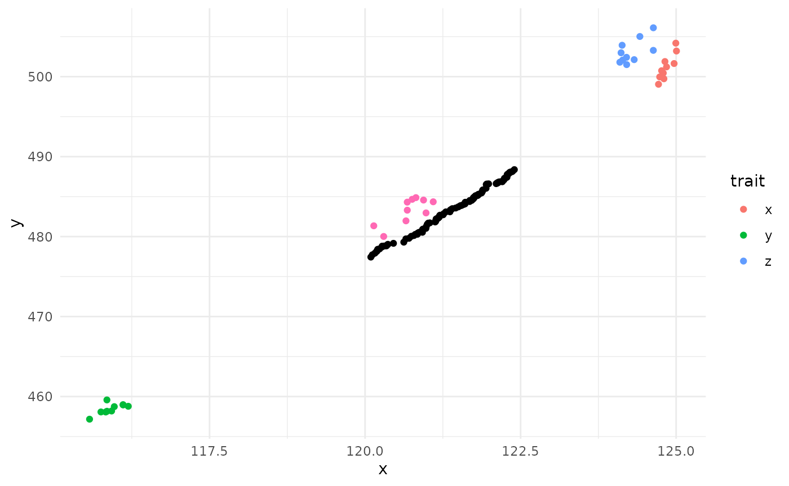
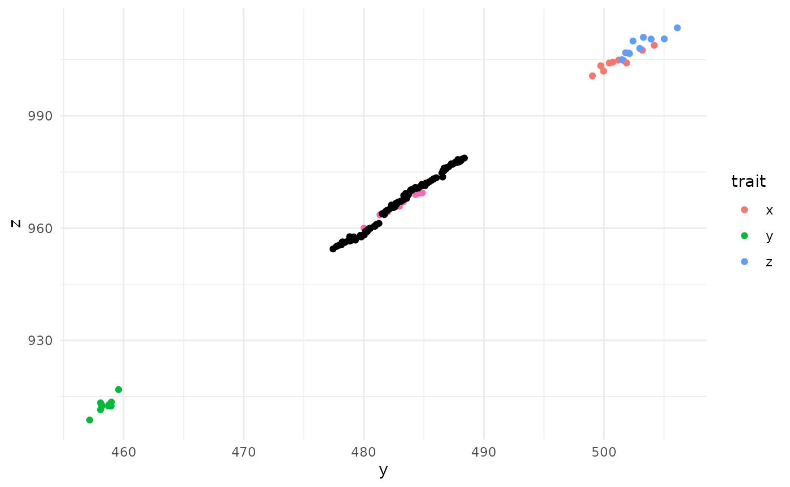
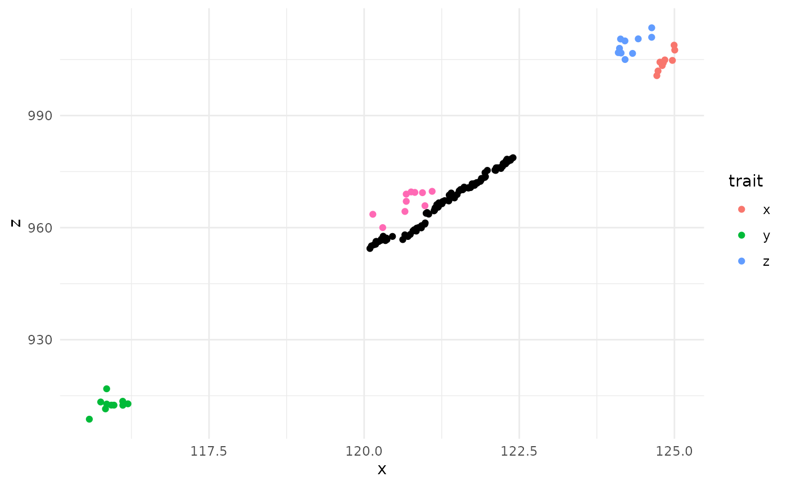

overview
overview.RmdA simple example
Loading data
For now we will generate some data to look at. This data is weakly positively correlated.
n <- 100 # how many "individuals" we want in our sample
set.seed(12345)
x = rnorm(n = n, mean = 120, sd = 2)
y = x * 4 + rnorm(n = n, mean = 0, sd = 5)
z = y * 2 + rnorm(n = n, mean = 0, sd = 5)
dat = data.frame(x = x, y = y, z = z)
head(dat)
#> x y z
#> 1 121.1711 485.8039 964.4270
#> 2 121.4189 479.8946 956.6429
#> 3 119.7814 481.2377 963.6929
#> 4 119.0930 469.7482 944.7883
#> 5 121.2118 485.5525 975.2618
#> 6 116.3641 462.7761 926.0783Formatting data
“trait” data
Expected formatting for trait data is a list of matrices. Here we are just working with vectors, but pairwise matrices of distances (genetic or otherwise) can also but added to the list.
The package refers to provided data as “trait” data, but this is in the broad sense and can include phenotypic or genotypic data, so long as it can be put into a matrix.
This list would work, however, as soon as you try and run the
simulation you would notice a warning about the scales of the traits
being off. This is an important consideration for your simulation. If
the scales of your traits are considerably different, the trait with the
larger values would be “favored” in the simulation if
p_depends_delta = TRUE, as the larger differences in values
between samples are larger and thus more important to the algorithm.
Thus, its a good idea to transform your data before running simulated
annealing. Fortunately, we have a function to do so.
trait_list_scaled <- scale_traits(trait_list)Measures
Now we need to specify what out exact goals are for each of these
traits. Some basic goals would be minimizing or maximizing a trait
(e.g., minimizing inbreeding vs maximizing genetic diversity), or even
maximizing variance (e.g., preserving phenotypes preventing selection
when subsetting). There are quite a few options, see
multiopt_sa() for more details. INSERT TABLE WITH
DESCRIPTIONS HERE??? We can pick the direction of the measure in the
arguments parameter, described next.
Again, this information needs to be in a list, with each list element
being the function we want to use to measure success. For simplicity,
we’ll just go with summarizing the measures with a mean of our trait
data, which are vectors, and thus why we will pick
weighted_mean_of_vector. Weighting is indicating the mean
is modified by how many times an individiual is chosen.
measure_list = list(
x = weighted_mean_of_vector,
y = weighted_mean_of_vector,
z = weighted_mean_of_vector
)Measure arguments
Some arguments require specialized parameter specification; here is where you can add those details. The arguments are also where you can specify what direction of success you are interested in (minimizing or maximizing, specified by direction = 1 or -1). Again, this needs to be a list. All trait names need to match between the trait, measures, and argument lists.
Let’s choose to maximize the first two traits (x, and
y), but minimize z. Since we are just doing a
simple mean, we dont need to supply any other arguments
A basic analysis
# how many "individuals" or samples we want in the final population
n_t = 50
# maximum number of times an individual can be chosen in the population.
# Here we are selecting an individual a maximum time of 1.
# You could select an individual multiple times for example when taking cuttings or collecting seeds from a selfed individual.
weights_max = 1
# initial_weights = sample(c(rep(1, n_t), rep(0, n-n_t))) # if you have an idea of what individuals are going to be best you can start the simulation off with those. There we are just picking the first `n_t` individuals. This argument isnt needed if specifying n_t.And with that we can start a simulation:
out <- multiopt_sa(
trait_list = trait_list_scaled,
measure_list = measure_list,
measure_args_list = args_list,
n_t = n_t,
weights_max = weights_max,
verbose = F
)Take a look at the results
plot(out$chain$values[,1], type = "l") # trait x
plot(out$chain$values[,2], type = "l") # trait y
plot(out$chain$values[,3], type = "l") # trait zWhat we want to see an lots of bouncing around in the beginning,
indicating the algorithm was exploring. As the temperature cools, we
want to see a gradual increase in value, with the final iterations being
fairly stable. With three trait dimentions the trait relationships can
get a bit convoluted. Here we can see very nice simulation results of
our “chain” (what the algorithm decided as the temperature cooled) for
two of the traits (x and y), but the opposite
of what we would expect for the last trait (z). If we think
back to how we generated our data, we made all the traits weakly
positively correlated, then chose to maximize two of them and minimize
the last one. So it was easy for the algorithm to maximize two traits
(since they were positively correlated), but since the last trait was
going in the opposite direction, it was not prioritized (as two traits
being improved is better one trait improving). So these results make
sense in the setup we provided.
We can also back transform the output to make the results a bit more interpretable.
out_unscaled <- unscale_multiopt(trait_list = trait_list, multiopt_output = out)
plot(out_unscaled$chain$values[,1], type = "l") # trait x
plot(out_unscaled$chain$values[,2], type = "l") # trait y
plot(out_unscaled$chain$values[,3], type = "l") # trait zUnderstanding what parameter settings are doing
One of the limitations with simulated annealing is that you will need to modify the starting parameters for each new combination of data and objective, as the analysis can be quite sensitive to each of the settings
temperature (min and max) iterations (max_steps)
A more complicated analysis
Randomizations
Simulated annealing, by definition, is a stochastic optimizer. As such, it is almost certain that results of each simulated annealing run will result in slightly different final results. As such, it would be good practice to run the process a few times to confirm the general range of expected values. Replication will also allow you to see which individuals are more frequently selected for the final populaiton mix, allowing you to prioritize which individuals to select for your goals.
MultiOpt has a wrapper for multiopt_sa that allows for
replication of simulated annealing with a simplified output of the
results, making it easier to get a nice list of replicated results:
rand_multiopt``. Parameters are virtually the same betweenmultiopt_saandrand_multioptsince they are doing the same task. The only additional informationrand_multioptneeds is how many times you want to repeat the analysis (n_runs), and if you want to run the repeats in parallel (parallel`).
Note that it probably isn’t necessary to run analyses in parallel unless
you are doing a lot of replicates or very long simulations.
Using the same data and settings we generated earlier, the setup is very similar:
# arguments for simulated annealing need to go into a named list
sa_args = list(
trait_list = trait_list_scaled,
measure_list = measure_list,
measure_args_list = args_list,
n_t = n_t,
weights_max = weights_max,
max_t = 2,
max_steps = 5000, # this should be increased when running an actual analysis
nda = T,
nd_samples = 500
)
multi_out = rand_multiopt(n_runs = 5, multiopt_args = sa_args, parallel = F)
#> Starting simulation at 2026-06-30 14:33:07.69028
#> Work completed in 0.58 minutes
str(multi_out)
#> List of 3
#> $ measure_summaries: num [1:5, 1:3] 0.655 0.667 0.656 0.664 0.627 ...
#> ..- attr(*, "dimnames")=List of 2
#> .. ..$ : NULL
#> .. ..$ : chr [1:3] "x" "y" "z"
#> $ individs_selected: num [1:5, 1:100] 1 1 1 0 1 1 1 1 0 1 ...
#> $ archive :List of 2
#> ..$ archive_summary: num [1:4, 1:3] 0.665 0.669 0.673 0.678 0.668 ...
#> .. ..- attr(*, "dimnames")=List of 2
#> .. .. ..$ : NULL
#> .. .. ..$ : chr [1:3] "x" "y" "z"
#> ..$ archive_weights: num [1:4, 1:100] 0 0 1 1 0 1 1 0 1 1 ...
#> .. ..- attr(*, "dimnames")=List of 2
#> .. .. ..$ : chr [1:4] "" "" "" ""
#> .. .. ..$ : NULLTo run in parallel you simply need to set up the session and specify
parallel = T:
library(future)
future::plan(multisession, workers = 4) # multisession indicates this is run on current machine
multi_out = rand_multiopt(n_runs = 5, multiopt_args = sa_args, parallel = T)
#> Starting simulation at 2026-06-30 14:33:43.394705
#> Work completed in 0.46 minutes
str(multi_out)
#> List of 3
#> $ measure_summaries: num [1:5, 1:3] 0.672 0.634 0.654 0.655 0.663 ...
#> ..- attr(*, "dimnames")=List of 2
#> .. ..$ : NULL
#> .. ..$ : chr [1:3] "x" "y" "z"
#> $ individs_selected: num [1:5, 1:100] 1 1 1 1 1 0 1 1 0 0 ...
#> $ archive :List of 2
#> ..$ archive_summary: num [1:2, 1:3] 0.683 0.675 0.664 0.667 -0.622 ...
#> .. ..- attr(*, "dimnames")=List of 2
#> .. .. ..$ : NULL
#> .. .. ..$ : chr [1:3] "x" "y" "z"
#> ..$ archive_weights: num [1:2, 1:100] 1 1 0 0 0 0 0 0 0 0 ...
#> .. ..- attr(*, "dimnames")=List of 2
#> .. .. ..$ : chr [1:2] "" ""
#> .. .. ..$ : NULLAnd let’s look at the results for the first two objectives (traits):
plot(multi_out$measure_summaries)As you can see, results are similar for each iteration but not quite the same.
Exploring the Pareto Front further
While the final solutions from simulated annealing are informative, we are also interested in trade offs between our objectives are, or the Pareto Front. The Pareto front are the solutions found during the simulated annealing run that are “non-dominated”, or the best choices given multiple conflicting goals. A solution (an option in the simulated annealing chain) is non-dominated if you cannot improve an objective without sacrificing performance in at least one other objective.
In short, the Pareto Front shows us what the best-case solutions are
when there are trade-offs. The collection of these non-dominated
solutions are the Pareto Front, or the “archive.” An archive can be
generated by both multiopt_sa and
rand_multiopt with the setting nda. all the
archive values generated by each run in rand_multiopt are
combined into a single archive, which is helpful to give a more complete
idea of what the tradeoffs are. If you wish to try and get more values
for your archive you can use expplor_pareto, which uses the
already generated Pareto Front as a starting point to keep looking for
non-dominated solutions.
pareto_out = explore_pareto(
multi_out$archive,
trait_list = trait_list_scaled,
measure_list = measure_list,
measure_args_list = args_list,
n_t = 50,
weights_max = weights_max,
max_t = 2,
nd_samples = 200,
verbose = F
)
plot(pareto_out$archive_summary)comparing multi-objective to single objective
In addition to the Pareto Front, it can be helpful to look at the trade offs when looking at a single objective vs multi-objective goals. If there is a small tradeoff between two objectives, you don’t really need to even measure both of them.
singleopt_context runs single-objective simulated
annealing for each of the provided traits and calculates the resulting
measures for each of the other traits. This analysis, in combination
with the Pareto Front gives a fairly complete view of the trade-offs
between objectives.
Here is a full analysis in one swoop:
n <- 500 # how many individuals to generate trait data for
# strongly + correlated
set.seed(12345)
x = rnorm(n = n, mean = 120, sd = 2)
y = x * 4 + rnorm(n = n, mean = 0, sd = 5)
z = y * 2 + rnorm(n = n, mean = 0, sd = 5)
dat_strong_p = data.frame(x = x, y = y, z = z)
trait_list = list(
x = as.matrix(dat_strong_p$x),
y = as.matrix(dat_strong_p$y),
z = as.matrix(dat_strong_p$z)
)
trait_list_scaled <- scale_traits(trait_list) # scale trait data
measure_list = list(
x = weighted_mean_of_vector,
y = weighted_mean_of_vector,
z = weighted_mean_of_vector
)
args_list = list(
x = NULL,
y = list(direction = -1),
z = NULL
)
n_t = 50
weights_max = 1
sa_args = list(
trait_list = trait_list_scaled,
measure_list = measure_list,
measure_args_list = args_list,
n_t = 50, weights_max = 1,
max_t = 2,
max_steps = 5000, # this is quite short, but will give a general idea
nda = T,
nd_samples = 200,
verbose = F
)
multi_out = rand_multiopt(n_runs = 10, multiopt_args = sa_args)
#> Starting simulation at 2026-06-30 14:34:13.355585
#> Work completed in 0.15 minutes
# run multiple rounds of SA
multi_out_unscaled = unscale_rand_multiopt(trait_list, multi_out)
# explore pareto more
pareto_out = explore_pareto(
multi_out$archive,
trait_list = trait_list_scaled,
measure_list = measure_list,
measure_args_list = args_list,
n_t = 50,
weights_max = 1,
max_t = 2,
max_steps = 5000,
nd_samples = 500,
verbose = F
)
pareto_unscaled = unscale_archive(trait_list, pareto_out)
# compare to single objective
single_out <-
singleopt_context(
trait_list = trait_list_scaled,
measure_list = measure_list,
measure_args_list = args_list,
n_t = n_t,
n_runs = 10,
verbose = F
)
single_out_unscaled = unscale_singleopt(trait_list, single_out)
# plot
library(dplyr)
#>
#> Attaching package: 'dplyr'
#> The following objects are masked from 'package:stats':
#>
#> filter, lag
#> The following objects are masked from 'package:base':
#>
#> intersect, setdiff, setequal, union
library(ggplot2)
# pareto front
test_single_df <- dplyr::bind_rows(single_out_unscaled, .id = "trait") %>% # single objectives
dplyr::as_tibble()
test_single_df %>%
ggplot(aes(x = x, y = y)) +
geom_point(aes(color = trait)) +
geom_point(data = multi_out_unscaled$measure_summaries, color = "hotpink") + # multi-objective
geom_point(data = pareto_unscaled$archive_summary) + # pareto front
theme_minimal()
test_single_df %>%
ggplot(aes(x = y, y = z)) +
geom_point(aes(color = trait)) +
geom_point(data = multi_out_unscaled$measure_summaries, color = "hotpink") + # multi-objective
geom_point(data = pareto_unscaled$archive_summary) + # pareto front
theme_minimal()
test_single_df %>%
ggplot(aes(x = x, y = z)) +
geom_point(aes(color = trait)) +
geom_point(data = multi_out_unscaled$measure_summaries, color = "hotpink") + # multi-objective
geom_point(data = pareto_unscaled$archive_summary) + # pareto front
theme_minimal()
# 3d plot of pareto front
library(plotly)
#>
#> Attaching package: 'plotly'
#> The following object is masked from 'package:ggplot2':
#>
#> last_plot
#> The following object is masked from 'package:stats':
#>
#> filter
#> The following object is masked from 'package:graphics':
#>
#> layout
plot_ly(x = ~x, y = ~y, z = ~z) %>%
add_markers(data = test_single_df, color = ~trait) %>%
add_markers(data = as.data.frame(multi_out_unscaled$measure_summaries), color = "multi") %>%
add_markers(data = as.data.frame(pareto_unscaled$archive_summary), color = "Pareto")